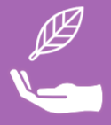

Mjedisi i vendit tim

T’i ruajmë tokën dhe pyjet
– Diskutoni për veprimin e xhaxhait që takoi Mali.
Shënime (opsionale)
– Si t’u duk mendimi i Malit për xhaxhanë?
Shënime (opsionale)
117

– Diskutoni për veprimin e xhaxhait që takoi Mali.
– Si t’u duk mendimi i Malit për xhaxhanë?
117